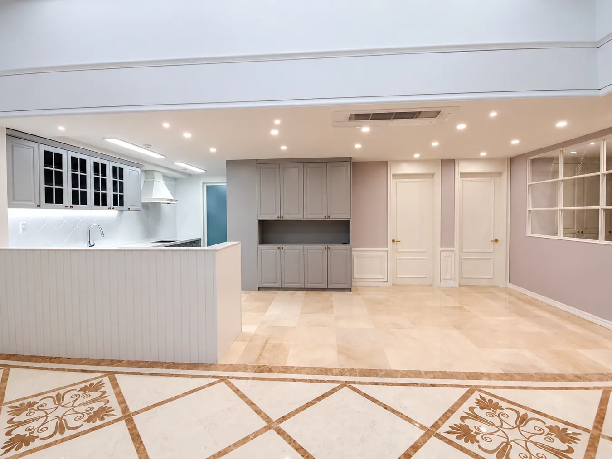

24평·25평 아파트 인테리어
20평대에서는 수납 깊이, 가구 배치, 주방 통로를 먼저 확인하세요. 현관 신발장과 주방 키큰장, 침실 붙박이장의 문이 서로 간섭하지 않는지 도면에 표시합니다. 확장·철거가 필요하면 구조와 공동주택 규정을 먼저 확인합니다.
THEMI / REMODELING GUIDE
20평대부터 40평대까지, 평수보다 중요한 공사 범위와 현장 조건을 확인하세요.
디자인더미는 하남시 덕풍동에 위치한 인테리어 업체입니다. 아래 내용은 전체 리모델링 견적을 준비하는 일반적인 체크 가이드이며 확정 견적이나 시공 실적을 의미하지 않습니다.
견적 상담 신청 ↗
SIZE & SCOPE
20평대에서는 수납 깊이, 가구 배치, 주방 통로를 먼저 확인하세요. 현관 신발장과 주방 키큰장, 침실 붙박이장의 문이 서로 간섭하지 않는지 도면에 표시합니다. 확장·철거가 필요하면 구조와 공동주택 규정을 먼저 확인합니다.
30평대는 주방과 거실의 연결, 가족별 방 사용, 욕실 수와 수납 계획에 따라 견적이 달라집니다. 동일한 평형이라도 창호 교체와 설비 공사를 포함한 견적과 마감 위주의 견적은 직접 비교하기 어렵습니다. 필수 공사와 선택 공사를 분리하세요.
면적이 넓어질수록 바닥·벽·천장 마감 면적뿐 아니라 조명 회로, 냉난방, 가구 길이와 수납 설계가 중요해집니다. 기존 가구의 재사용 여부와 공간별 우선순위를 함께 정리하면 공사 범위를 비교하기 수월합니다.
오래된 아파트는 누수 흔적, 배관·전기 상태, 결로, 창호 기밀성과 바닥 수평 등을 현장 확인해야 합니다. 겉마감만 바꿀지 설비까지 정비할지에 따라 공정과 예산이 달라질 수 있습니다.
주방은 급배수·전기·환기와 가전 배치를, 욕실은 방수·배수·환기와 위생기구를, 거실은 조명·바닥·벽체를, 현관은 수납·중문·동선을 확인합니다. 부분 공사만 의뢰할 경우 실제 수행 가능 여부는 상담에서 확인합니다.
입주일과 이사일, 관리사무소의 공사 가능 시간, 엘리베이터 보양·자재 반입 조건을 확인하세요. 평면도, 현재 사진, 원하는 마감, 반드시 교체할 항목을 준비하면 초기 견적 상담에 도움이 됩니다.
여러 업체의 견적은 같은 범위를 기준으로 비교해야 합니다. 다음 항목의 포함 여부와 별도 비용을 확인하세요.
정확한 금액과 기간은 현장 확인 및 계약 범위에 따라 달라집니다.
경기 하남시 덕풍북로251번길 36 1층 · 031-792-4551